ANEM
A PEU.
One system: a 24-unit grid, one stroke weight, square ends, the xamfrà (Cerdà's cut corner) as the base form — and in every mark exactly one coloured dot, the punt volat of Catalan l·l. Words are Catalan, set like a street plaque, with English beneath.
Icons
16 / 24 / 48 px. The coloured dot is the only accent; the colour follows the area or category.
Markers
Xamfrà pins on a light map. Coffee = Gràcia red, vegan = Encants green, see & do = Sagrada yellow, secondhand = Poblenou blue, office = ink with a sea dot, our pick = red with the l·l.
Badges
Plaques
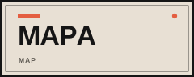
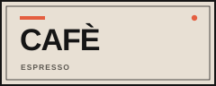
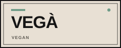
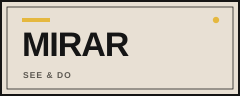
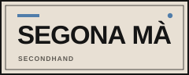
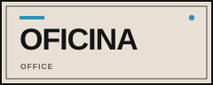
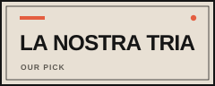
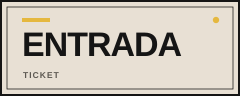
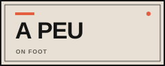
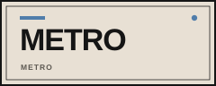
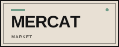
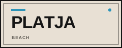
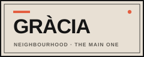
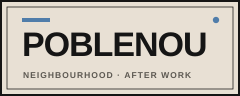
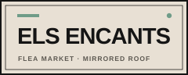
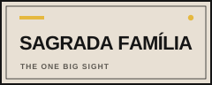
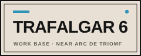
Catalan first, English beneath. Use as section labels, card headers or print — not as decoration: every word names something the guide actually has.
Backgrounds
Gràcia is not a grid — its pattern is streets opening into plaças. The Cerdà grid belongs to Poblenou and the office.
Anem a peu
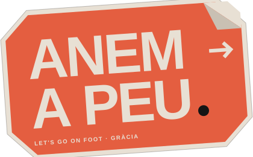
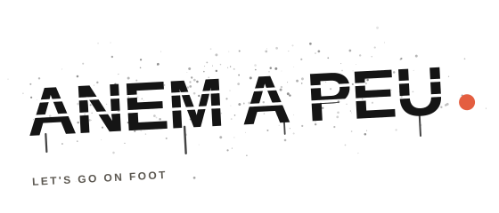
Colours
#E8E0D4
#151515
#5C5851
#E45E40
#507DAA
#6F9C88
#E5B83F
#2C94B8